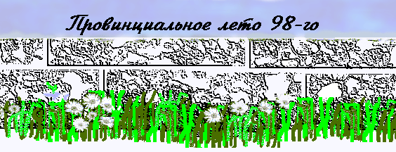

печатных книжек нет,
вот эта подпись гордая
есть мой автопортрет
Степанакерт
Сага
:авторский
сайт
графомана
рукописи не горят!.. ...в интернете ...
День еще не клонился к закату, но, пожалуй, был уже прожит.
В окошечке электронных часов, когда я отвернул покрывающую их манжету рубахи, чернела пять с двумя нулями. Мой срок истек.
Сказав об этом собеседницам, я встал из белого пластмассового кресла и обменялся прощальным рукопожатием с Вардануш Аслановной, которая сидела в точно таком же кресле слева, и с санитаркой Эммой – справа.
Выступив из-под навеса свареной из труб детсадовской беседки, я двинулся к приглашающе распахнутым воротам из листового железа, за которыми открывалась широкая панорама на крутой склон городского кладбища и на дорогу—левее и выше—что ведет туда, где склон сменяется небом.
Сизый дымок лениво вился из металлического ящика—узкого и высокого—у стены забора, рядом с раскрытой вовнутрь половинкой ворот.
Утром этого дня, когда я вступил сюда через высокий порог калитки в листовом железе закрытых еще ворот, бодрые языки пламени вырывались из узкого ящика, пошевеливая подвяленую листву на боковой ветви близстоящего дерева.
Человек в летней рубашке из тех, что в нынешнем сезоне носит половина мужского населения Степанакерта (расцветка шахматкой с решеточкой поверх), покачивал, для зарядки, верхнюю часть туловища, ухватившись за торчащие из асфальта трубы с перекладиной, а на них крюки, куда когда-то подвешивались качели ясельной группы.
Мы обменялись вежливо-настороженным приветствием незнакомых друг другу людей и я прошел мимо, в пустую беседку, и сел на деревянную доску-скамью вдоль стенок-перил, подальше от пружинистого красного матраса поставленного в углу на ребро.
Еще тут был легкий стол из белой пластмассы, да на передней стенке-оградке висела забытая кем-то аллюминиевая трость, уцепившись черной рукоятью за трубу.
Мужчина прекратил упражнения и правой рукой снял с крюков застылый захват своей левой кисти, чтоб двинуться к дальней беседке по ту сторону площадки, для каждого шага с усилием выбрасывая вперед левую половину своего полупарализованного тела.
От одноэтажного корпуса в побурело-розовой штукатурной шубе подошла тощая женская фигура в зимней вязаной шапке с притянутыми к ней очками на резинке.
Запрокинув голову, она осмотрела меня увеличительными льдинами-линзами, поздоровалась и села в дальнем углу беседки.
Следом плавно, словно в самодвижущейся ступе, замаскированной широким халатом до земли, приплыла, подталкиваясь палочкой, невысокая грузная особа.
Всклоченные лохмы седых волос и невозвратно оттопыренная нижняя губа придавали лицу ее выраженье монаршьей пренебрежительности ко всем и вся.
Ей вслед доносилось вжиканье метлы по дорожке за углом корпуса.
Она без предисловий спросила мое имя и тут же оповестила, что мужских мест у них нет, если я пришел приниматься в их дом престарелых. Или еще за чем?
Да, нет. Не то, чтоб приниматься. Просто на день. Посмотреть что есть, чего нет.
Накануне, набрав полученный в редакции номер, я условился с приятным женским голосом, что побуду у них с восьми до пяти—рабочий день—чтоб написать предпоследний очерк из цикла о летнем Степанакерте.
Тогда казалось все логичным: читателям – контраст (от восторженно взирающих в свое будущее абитуриентов к недоуменно озирающимся на свое прошлое старцам), а мне – день заслуженного отдыха, после рейдовых обходов живых и мертвых городских базаров и хождений по семи университетам.
Но теперь мне четко вспомнилось, что рабочий день – штука довольно длинная и прожить его – не поле перейти...
Круглолобая смуглая старуха в черном фартуке поверх небесно-синего халата для обслуживающего персонала, сметала листья и хвою с асфальта и, утоптав в большое ведро, относила подкормить огонь в ящике у ворот.
Входящие—то по одной, то парами—работницы учереждения непонимающе поглядывали на мое необъяснимое присутствие и заходили за корпус.
Но вот за воротами зафырчала машина и вошла женщина средних лет, холеного сложения, с каштановыми, чуть вьющимися волосами, подрезанными на практичную длину.
Длинное однотонное платье с коротким рукавом чем-то смахивало на халат, но халат элегантный, на той грани, где простота переходит в роскошь.
В глазах ее не было вопроса: она решительно повернула к нашей беседке и я вышел навстречу директору – Ирине Николаевне Саркисян.
Да, пожалуйста, как условились. Пусть живут этот день как всегда, будто меня тут нет.
Информ-минимум: 26 подопечных – 9 мужчин, остальные женщины. Персонала 36 человек (работа посменная).
Да, мне интересно будет обойти здание, но не сейчас, день длинный, успеется.
Она уходит к себе, а я пересаживаюсь в беседку напротив, где тень погуще.
Приехал зеленый мини-автобус дома престарелых. И отворенные перед ним ворота уже не закрывались целый день.
И ни один из редких тут прохожих не миновал их без того, чтоб не заглянуть внутрь – полюбопытствовать: каким я стану в будущем?
Увлекательное занятие знакомиться с людьми, которых тебе не представляют, а просто подслушиваешь как окликают их по именам в ходе общения.
Сурик уже перестал качать свое тело.
Его сменил крепыш Тигран. Он энергично помахивал руками, вызывающе оборотившись к кладбищу: мол, на-кось, выкуси! И даже делал пробежки метров по шесть, тяжко стуча башмаками.
Рослый красавец Симон, с выбритыми в ниточку белыми усами над верхней губой, возился с водяными шлангами, поливая крохотную грядку помидоров, и грядку лоби за дорожкой, и длинную клумбу астр под торцевой стеной корпуса.
По распоряжению, как видно, Ирины Николаевны, Неля из домика администрации принесла мне в беседку удобное пластмассовое кресло.
На той стороне—в беседку с красным матрасом—принесли нарды и набор таких же кресел.
На дорожке показался обросший бородой Джалал, переставляя пару коротких костылей под туловищем с неразгибаемой спиной и подтаскивая следом свою неподатливую ногу.
Он нестерпимо медленно продвигался к той же беседке, где собрались уже Сурик, Симон, Тигран, Ашхен и две зашедшие с улицы девочки лет восьми в бальных нарядах из пышной кисеи: красный на одной, белый на другой.
Они тут были явно свои люди и то наблюдали за игрой в нарды, то взбирались на перила стенок-оградок и спрыгивали на асфальт, красуясь своими платьями и блестящими туфельками, а когда Джалал достиг беседки, даже сели поиграть в домино.
Меня в беседке навестила Ирина Николаевна, рассказала о житье-бытье подопечных и персонала.
Все это так сложно. Ведь все эти люди, с телами исковерканными пытками болезней (даже красавец Симон страдает от непрокашливаемой астмы), обезображенные безжалостной старостью, были когда-то полны сил, главенствовали в своих семьях и домах.
Все, что остается им теперь, это "наш" дом и отведенный ему спецучасток на городском кладбище.
Им нравится туда ездить, очищать участок от сорняков. Собирались и сегодня, да мини-автобус забарахлил. (Або и Беник помогают водителю ковыряться в частях вынутых из мотора.)
А вообще-то, Ирина Николаевна толком и не представляет как надо и что. Работает наощупь, чтоб просто они чувствовали заботу.
Когда родственники Джалала надумали забрать его, она через неделю съездила и увидала его в подвале, вяжущим веники. Для того, наверно, и понадобился.
Предложила компромисс: она заберет Джалала обратно, а они пускай приносят материал. Он будет делать для них веники, а им даже кормить его не придется. Согласились. Но материал не приносят. Стыдно наверно.
Или вон дети заходят. Играют, дружат со стариками. Может так и не положено, но для них это такая радость. Больше, чем концерты из местных школ.
И насчет финансов бывают трения.
Почему директор не хочет брать мешками крупу и концентраты? Так проще: по безналичному расчету. А она требует 500 драм в день на каждого подопечного, как и полагается им на пропитание. Почему?
Да чтоб им тут всего доставалось попробовать: и зеленого лоби и молодой картошки. Сейчас вон винограда просят, арбузика.
А невозможно точно уложиться. В какой-то день тратишь больше 500, а когда и меньше. Финансовое нарушение.
А такого финансиста неделю на вермишели подержать, что запоет?
Побелку вон затеяли в коридоре. Известь бесплатно получили от армии, а белит санитарка Эмма. Она в Баку маляром была. Тоже надо как-то три тысячи выкроить. У санитарок оклад всего 7 тыс. драм, а она в конце августа дочку замуж выдает.
Мы подымаемся в коридор с только что помытыми полами. Полы некрашены, а между досок такие щели куда ногой хоть и не провалишься, но костылем – запросто.
От крыс спасает кошка со взрослым котенком, которых держит русская баба Оля.
Свежая побелка теряется между темной краской потресканой панели и закопченым фанерным потолком.
Одно из окон пробито пулей, еще с тех времен как тут размещался федаинский ФЕДАИ —
на греческом "боец за свободу":
название карабахских-армянских воинов в карабахской войне 1991-94 г. г.
штаб.
В палатах окон нет. Свет заходит через раскрытые в коридор двери.
Заходит и Ирина Николаевна, погладить по спине Арев-ат, которая безутешно плачется, что украли ее домашники, а через десять минут найдет их у себя под подушкой.
Заходит спросить певицу Розу, когда та пойдет помыться в бане. Но та уже вторую неделю отвечает, что вчера была.
Заходит утешить 95-летнего Мухана, что лежит и стонет от болей в животе. Накануне вызывали врача, но лекарства не помогли.
Заходит принять поцелуй в руку от неугомонной бывшей заведущей шаумянской больницы, которая на чистое постельное белье непременно подстелит свой ветхий палас.
Потом в своем кабинете Ирина Николаевна угощала меня кофе и показывала "семейный альбом" с цветным фотографиями и Тамары, и обеих Марго, и Самвела и всех-всех.
А у тех, кто умер раньше, фото черно-белые. И короткие записи возле каждого снимка. Когда родился. Кем был в своей жизни. Когда поступил...
Рассказала Ирина Николаевна какой радостью для обитателей дома стало известие, что скоро переедут в новое место. Тихое и ровное, где много фруктовых деревьев, чтоб варить джемы.
Как ездила она в то место—бывший садик, рядом с бывшим проектным институтом.
Как рисовала план с городским архитектором: где будет столовая и как устроить, чтоб поменьше было лестниц, и откуда удобней заезжать машине.
И как строила планы: а что если объединить в одном месте престарелых и детей-сирот?
Пусть бы днем дети ходили в школу, а потом возвращались бы обратно – домой. Если такое сочетание не положено, то, наверное, просто потому, что так не пробовали...
А потом один из стариков вышел в город (им ведь разрешается, с надлежащим оформлением) и принес с базара новость, что место это не дадут.
Еще через неделю позвонили сверху сказать, что под дом престарелых отводится садик на бывшей Энгельса. Крутой взгорок напротив бензоколонки.
Директор поехала посмотреть и ужаснулась: там спешно доканчивали сооружение столовой за 15 метров от общего корпуса.
Что такое 15 метров для решительного руководства? Что такое 15 метров по зимней слякоти и в дождь для тихохода Джалала или 90-летней слепой Шушан, которая за один шаг продвигается на 20 сантиметров?
И нет укромных мест для сушки обмоченых постелей: старики, они ведь как дети малые...
Потом директор уезжала по делам, а я вернулся в беседку, куда принесли еще кресел и привезли на каталке Марго. (Для спуска и подъема ее колесного кресла по ступеням крыльца требуются объединенные усилия трех санитарок).
Санитарка Цовик привела за руку слепую Шушан, усадила в кресло и подсказала в каком направлении находится "комиссия", то есть – я.
Самоходная Вардануш сама пришла, подталкиваясь палочкой.
Марго начала причитать: зачем только ее Бог держит на этом свете, с такими болями ног. Шушан ее одернула, что безболезненно и дурак проживет, а боли ей, чтоб ума-разума набиралась – чем мы старее, тем мудрее.
Потом Вардануш пришла охота попеть. Исполнив куплета два, она поднялась и плавно уплыла за ворота. Все оставшиеся задремали. Марго в своем кресле с колесами, Шушан и я – в пластмассовых, а кошка бабы Оли на деревянной доске-скамейке.
Потом Шушан проснулась сказать, что будет дождь, потому как у нее в ухе чешется и какая-то негодящая была комиссия:
совсем сус-у-пуc СУС-У-ПУС —
на армянском означает: "тихоня".
, такие разве бывают?
Потом был обед и, по приглашению вернувшейся Ирины Николаевны, я заходил в полутемную столовую с японским телевизором в углу (подарок баронессы Кокс).
Пахло аппетитно и совсем по-домашнему. Повар Флора с честью подменяла Арегу Сергеевну, отпросившуюся на заработки в евангелистский лагерь "Каркар".
Мясные тефтели из супа Вардануш съела, а на жареный зеленый лоби еще презрительней выпятила губу – в приправе оказался портулак, которого она не терпит.
А Тамара свой компот из свежих фруктов почему-то отдала Тиграну.
Некоторым обитателям дома обед отнесли в палаты, как Ашхен, или бывшей завбольницей, тоже Вардануш.
А Мухан все также стонал в постели и от всего отказывался.
И опять я сидел в беседке, где меня навещали Римма и Арев-ат, и медсестры Рита и Ася. А Симон (который, оказывается, Самвел, но просто их тут двое с таким именем и надо ж как-то отличать) опять поливал из шланга, а потом его сменяли Або и баба Оля.
- А я тебе так скажу,- продолжала втолковывать мне Вардануш.- Отсюдова я – никуда. Если переедут, так без меня. Все. Терять мне нечего, даже партбилет в Баку остался. Всех директоров тут повидала: один был пьяница, двое – воры. Ну, и остальные за ними тянулись. Теперь тут хорошо.
Да и куда ей, если ее тут нашел сын ее? Покойный Аркадя. Вчера зашел в ворота, днем, и встал перед беседкой. Одет во все белое.
"Ой,"- говорит,- "мам, насилу тебя отыскал. Столько все ходил. У всех спрашивал."
И не спала она вовсе. Вот тут он стоял.
Потом срок мой истек. Я простился с ней и с санитаркой Эммой и вышел за ворота.
Помудрев еще на один день.